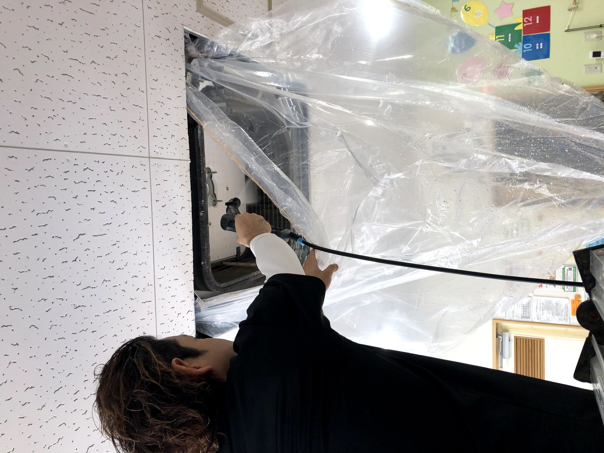
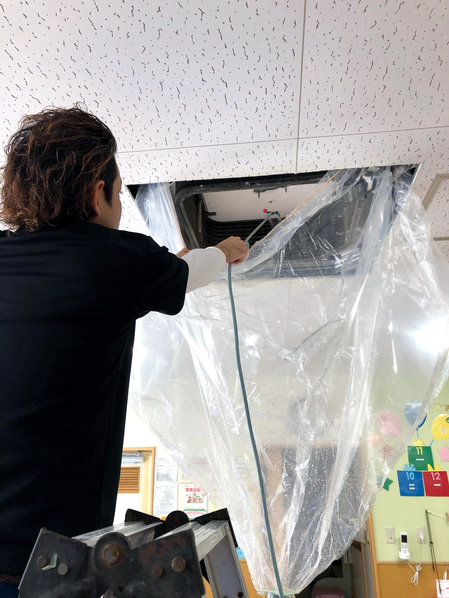
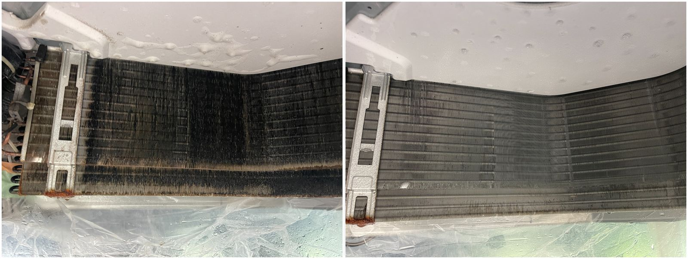
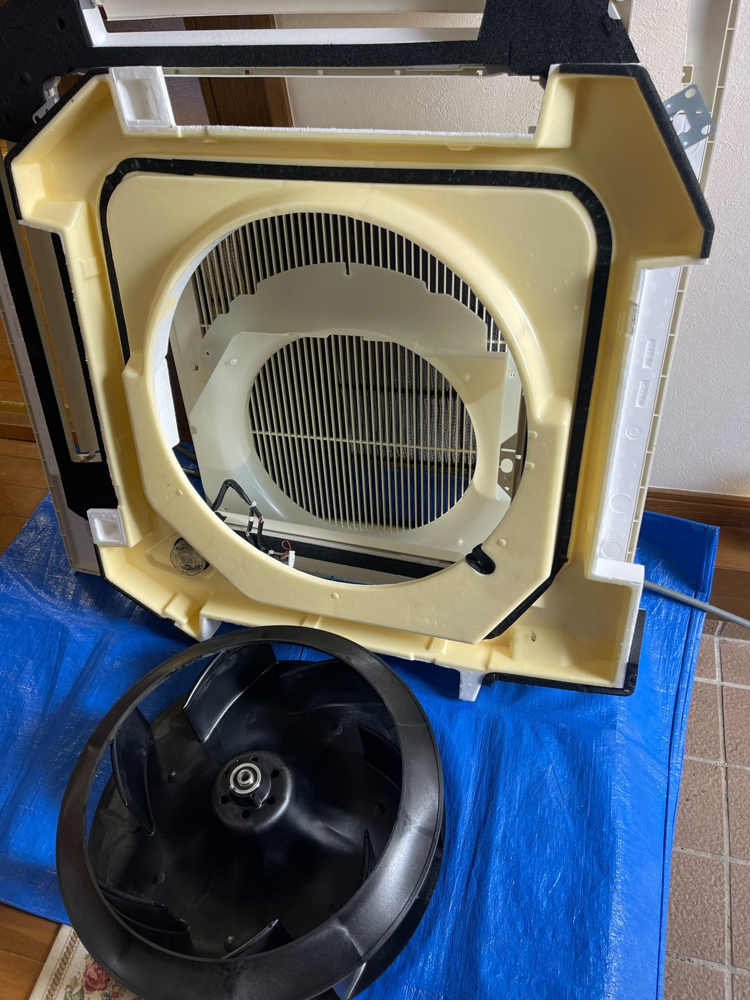
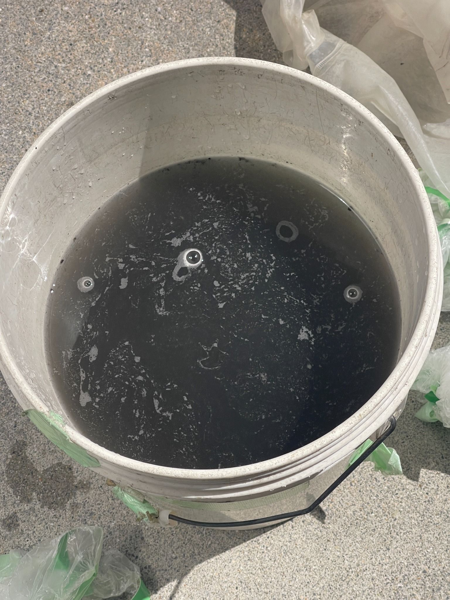

沖縄本島の業務用エアコン清掃
竣工清掃・現場清掃にも対応
店舗・施設・建設会社向けサービス
業務用エアコンの複数台洗浄から、
竣工清掃・現場清掃まで対応しています。
沖縄本島内の案件は内容に応じてご相談ください。
対応可能な作業
- 業務用エアコン清掃
- 天井カセットエアコン洗浄
- 複数台洗浄
- 竣工清掃
- 改修後清掃
- ガラス清掃
- 床洗浄
こんな現場でご相談いただいています
- 店舗オープン前の清掃
- 事務所・施設のエアコン清掃
- 工事後の引き渡し前清掃
- 複数台まとめて洗浄したい
- 元請け・協力業者として依頼したい
こんな会社・現場からご相談いただいています
- 建設会社・工務店
- 店舗オーナー
- 施設管理者
- 事務所・テナント管理
- 改修後・引き渡し前の現場
- 複数台洗浄が必要な案件
選ばれる理由
- 清掃業17年の経験
- エアコンクリーニング7年
- 第二種電気工事士
- 現場対応に慣れている
- 空調と清掃をまとめて相談しやすい
作業イメージ




対応エリア
沖縄本島内対応
案件内容・規模に応じてご相談ください
料金について
業務用エアコン清掃や竣工清掃は、
台数・広さ・作業内容によって変わるため
現場状況を確認のうえお見積りいたします。
まずはLINEで写真や内容をお送りください。
ご相談から作業まで丁寧に対応します
BCサービス 代表
照屋 昴